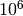
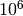
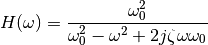
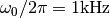
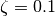
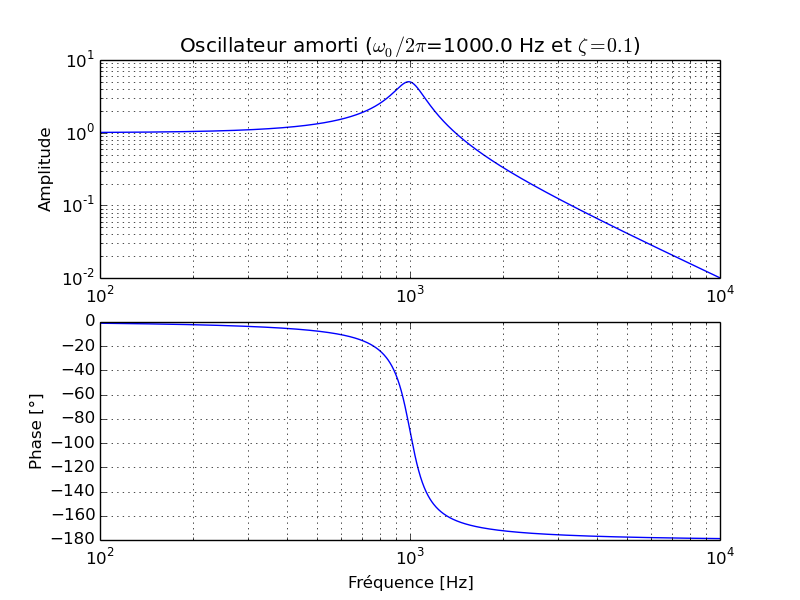
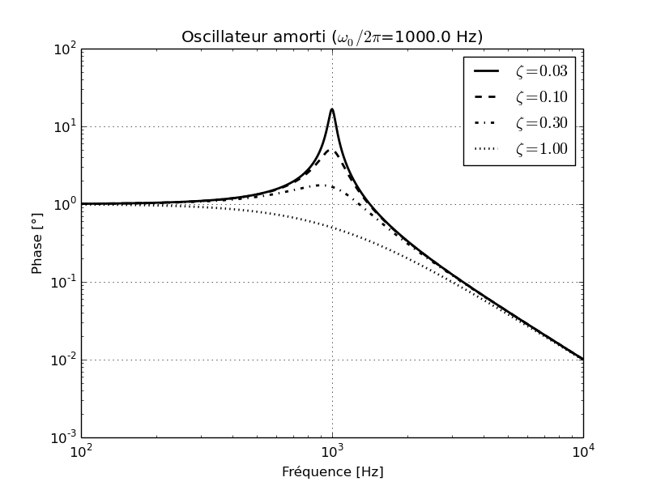
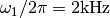
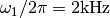

Exercises on graphics (and numpy)¶
Measurement of pi (Monte Carlo)¶
This exercise can be solved without any loop.
- Using the
randfunction, creates two array X and Y withN=1000random samples from a uniform distribution over[-1, 1[. - Plot the points
- Plot a circle of radius 1 and plot using a different color the points inside the circle.
- How many points are inside the circle ?
- The number of points is proportional to the area of the circle. Deduce an approximate value of
 . One can use  points (without plotting the figure…)
. One can use  points (without plotting the figure…)
Solution
from numpy import *
from pylab import *
ion()
N = 1000
X = 2*rand(N)-1
Y = 2*rand(N)-1
figure(1)
clf()
plot(X,Y, '.')
cond = (X**2 + Y**2)<1
plot(X[cond],Y[cond], '.')
theta = linspace(0, 2*pi, 201)
plot(sin(theta), cos(theta))
def mesure_pi(N):
X = 2*rand(N)-1
Y = 2*rand(N)-1
Nb_points = sum((X**2 + Y**2)<1)
return 4*Nb_points/float(N)
print mesure_pi(1000000)
Bode plot¶
The transfer function of a damped oscillator can written in the Fourier space using the formula :

We would like to draw the three following graphs :
Bode plot for  and 
Tranfer amplitude function for and different values of
 .
.Bode plot for the product of two tranfer function ,
 , , .
, , .
{kind=link}
{kind=link}
You will uses the following functions :
loglogsemilogxxlabel,ylabelettitlegridsubplot(ny, nx, n)- The
labeloptional parameter and the functionlegend. - The
anglefunction of numpy can be used to calculate the phase of a complex number. For the last graph, one should modify the phase in order for the plot to be continuous (do it without any loop!).
You should also know how to
- make a string with accents (for french labels!).
- format a string to insert parameters
- For the greek letters, one can use unicode or latex formula.
Solution
from pylab import *
def H(omega, omega_0, zeta):
return omega_0**2/(omega_0**2-omega**2 + 2J*omega*zeta*omega_0)
omega_0 = 2*pi*1000
zeta = 0.1
Tomega = 2*pi*10**(linspace(2,4, 1001))
amplitude = H(Tomega, omega_0, zeta)
figure("exo1.1")
clf()
subplot(2,1,1)
title_str = 'Oscillateur amorti ($\omega_0/2\pi$={0} Hz et $\zeta={1}$)'
title(title_str.format(omega_0/(2*pi),zeta))
grid(True, which='both')
loglog(Tomega/(2*pi), abs(amplitude))
ylabel('Amplitude')
subplot(2,1,2)
semilogx(Tomega/(2*pi), angle(amplitude)/(2*pi)*360)
ylabel(u'Phase [°]')
xlabel(u'Fréquence [Hz]')
grid(True, which='both')
savefig('exo1_1.pdf')
savefig('exo1_1.png')
Tzeta = [.03,0.1,0.3,1]
Tlinetype = ['-', '--', '-.', ':']
figure("exo1.2")
clf()
for zeta, linetype in zip(Tzeta, Tlinetype):
amplitude = H(Tomega, omega_0, zeta)
loglog(Tomega/(2*pi), abs(amplitude), 'k'+linetype,
label="$\zeta={0:4.2f}$".format(zeta), linewidth=2)
grid(True)
xlabel(u'Fréquence [Hz]')
ylabel(u'Phase [°]')
legend()
title_str = 'Oscillateur amorti ($\omega_0/2\pi$={0} Hz)'
title(title_str.format(omega_0/(2*pi)))
savefig('exo1_2.pdf')
savefig('exo1_2.png')
omega_0 = 2*pi*1000
omega_1 = 2*pi*2000
zeta_0 = 0.5
zeta_1 = 0.5
Tomega = 2*pi*10**(linspace(2,4, 1001))
amplitude = H(Tomega, omega_0, zeta_0)*H(Tomega, omega_1, zeta_1)
figure("exo1.3")
clf()
subplot(2,1,1)
title_str='Double oscillateur ($\omega_0/2\pi$={0} Hz,\
$\zeta_0={1}$, $\omega_1/2\pi$={2} Hz et $\zeta_1={3}$)'
title(title_str.format(omega_0/(2*pi),zeta_0, omega_1/(2*pi), zeta_1))
grid(True, which='both')
loglog(Tomega/(2*pi), abs(amplitude))
ylabel('Amplitude')
subplot(2,1,2)
phase = angle(amplitude)
phase[phase>0] -= 2*pi
semilogx(Tomega/(2*pi), phase/(2*pi)*360)
ylabel(u'Phase [°]')
xlabel(u'Fréquence [Hz]')
grid(True, which='both')
savefig('exo1_3.pdf')
savefig('exo1_3.png')